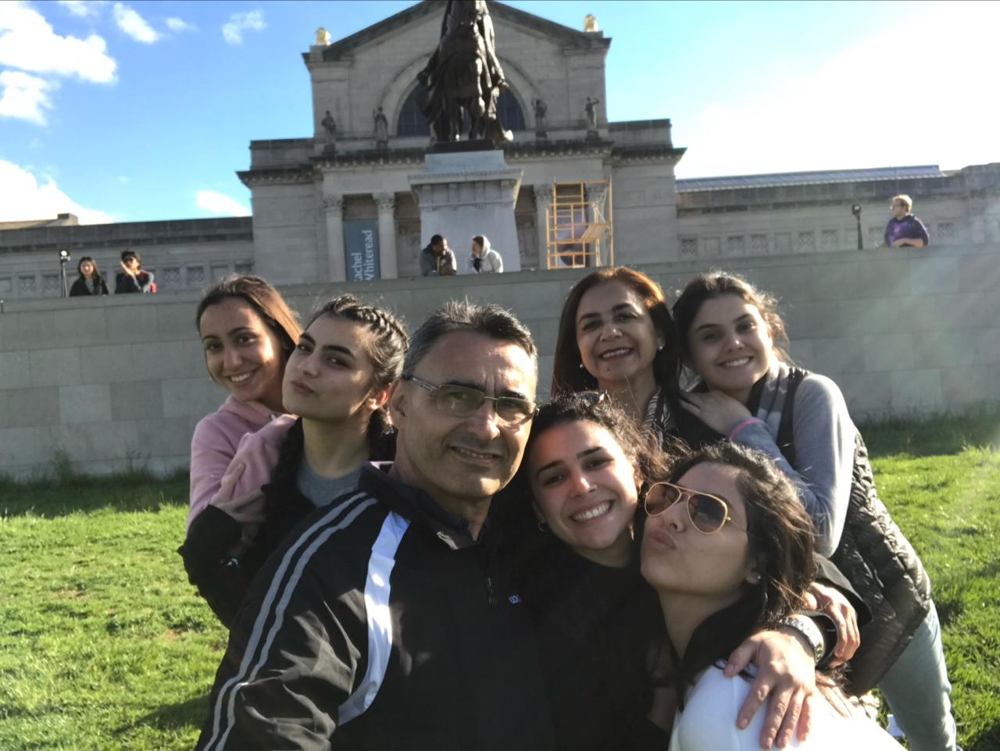

HELLO!! My name is Ingrid Martinez, As a passionate member of the Traditional Handmade Threads Company, I bring a vibrant mix of engineering insight, dedication to craftsmanship, and a deep appreciation for the cultural significance of "Ñanduti." My academic background in engineering equips me with a unique perspective on solving real-life problems, allowing me to innovate and enhance the methods we use to share our products. My commitment to preserving and sharing the beauty of our heritage is at the heart of everything I do. Outside of work, I cherish spending time with my family and friends, which keeps me grounded and inspired. My love for fashion and travel fuels my creativity, providing fresh insights into trends and cultural crafts from around the world. Staying active through swimming and pilates, along with my love for series, balances my lifestyle, ensuring I bring my best self to our team every day.
